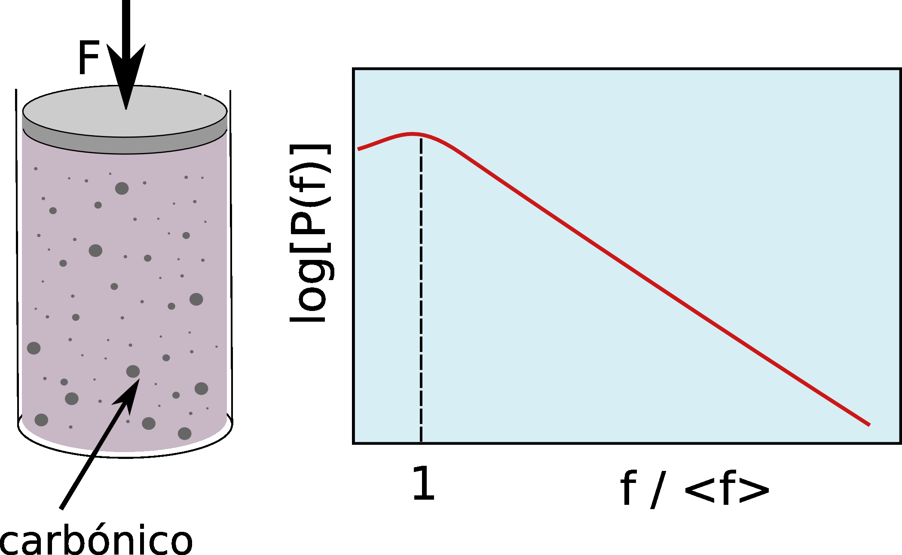
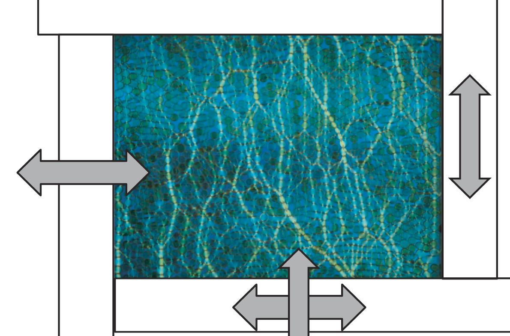
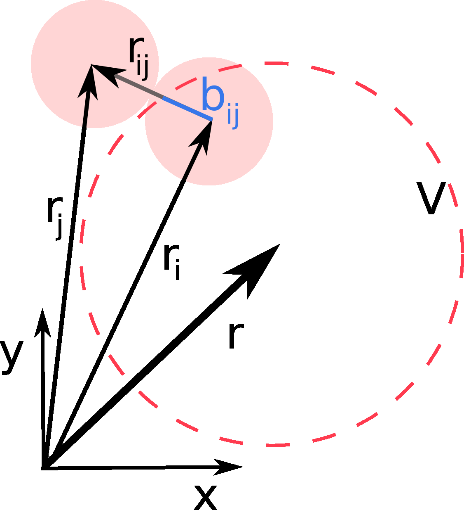
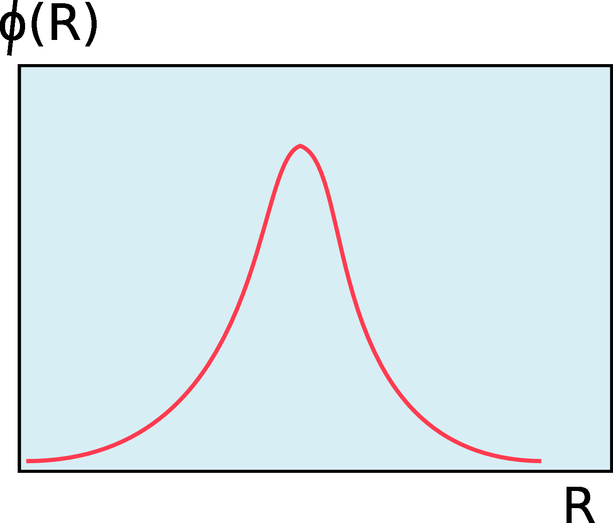
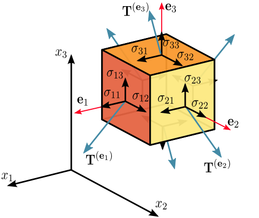
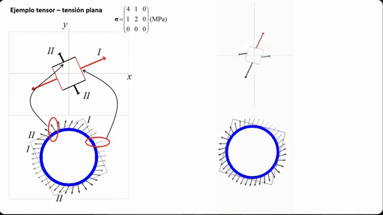

CLASE 3 - GEOFÍSICA DE MEDIOS GRANULARES
CADENAS DE FUERZAS
Y REDES DE CONTACTO
THOMAS GALLOT,
CAMILA SEDOFEITO
Instituto de Física,
Facultad de Ciencias,
Universidad de la República
Plan de la clase
- Distribución heterogénea de fuerzas
- Cadenas de fuerza: observación experimental
- Redes de contacto
- Tensor de esfuerzos de Cauchy
- Direcciones principales
- Tensor de deformación y ley de Hooke
- Círculo de Mohr
Distribución heterogénea de fuerzas

Cilindro de papel carbónico: la fuerza sobre cada grano se mide por la impresión dejada.
En un medio granular, las fuerzas de contacto no se distribuyen uniformemente.
- Muchos contactos con fuerzas menores que el promedio
- Cola exponencial para fuerzas grandes: $P(f) \propto e^{-\beta f/\langle f\rangle}$
- Estudios recientes sugieren $P(f) \propto \exp[-\beta(f/\langle f\rangle)^2]$ para $f \gt \langle f\rangle$
▼ Derivación (Liu et al., Science 1995)
Experimento: papel carbónico (Liu et al., 1995)
Dispositivo experimental:
- Contenedor cilíndrico (90 mm diámetro, 75 mm alto)
- Esferas de vidrio Pyrex ($r = 3{,}5$ mm) en fluido de índice adaptado (glicerol + agua)
- Papel carbónico en la base del contenedor
- Fuerza aplicada: $F = 310$ N sobre la superficie superior
- El área de la marca $\propto$ fuerza ejercida por cada grano
Ajuste: $\beta = 0{,}64\;\text{N}^{-1}$ (total), $\beta = 1{,}02\;\text{N}^{-1}$ (centro)
Esquema del experimento
Liu, Nagel, Schecter, Coppersmith, Majumdar, Narayan & Witten, Science 269, 513 (1995)
Modelo q de Liu et al.
Modelo escalar en red: cada grano en la capa $D$ distribuye su peso a $N$ granos de la capa inferior con fracciones aleatorias $q_{ji}$.
Vínculo: $\displaystyle\sum_{j=1}^{N} q_{ij} = 1$ | Distribución: $\rho(\{q\}) = \prod_j f(q_{ij})\;\delta(\sum q_{ij} - 1)$
Aproximación de campo medio:
- Campo medio: ignorar las correlaciones entre vecinos
- Para $f(q) = \text{cte}$, el campo medio es exacto para todo $N$
Andreotti et al., Granular Media (2013), §3.2.2, p.73–76
Liu et al., Science 269, 513 (1995), Eqs. 2–4
Práctico: Modelo q de Liu et al.
Objetivo: explorar analítica y numéricamente el modelo q para comprender el origen de la distribución exponencial de fuerzas en medios granulares.
- Campo medio: derivar la ecuación de convolución para $P(f)$
- Transformada de Laplace: resolver la ecuación para $q$ uniforme
- Distribución Gamma: obtener $P(\tilde{f}) = \frac{N^N}{(N-1)!}\tilde{f}^{N-1}e^{-N\tilde{f}}$
- Casos particulares: calcular $P(\tilde{f})$ para $N=2$ y $N=3$
- Simulación numérica: implementar el modelo q en Python, comparar con la solución analítica
- Más allá del campo medio: discutir los efectos de correlaciones
- Conexión entre el modelo q y el teorema central del límite
- Universalidad de la cola exponencial
- Rol de la coordinación $N$ en la forma de $P(f)$
- Comparación teoría / simulación / experimento
Resultado principal a demostrar:
\[ P(\tilde{f}) = \frac{N^N}{(N-1)!}\;\tilde{f}^{\,N-1}\;e^{-N\tilde{f}} \]Ver: Practico_Modelo_q_Liu.pdf en Actividades
Basado en Liu et al., Science 269, 513 (1995)
Solución exacta: distribución $P(\tilde{f})$
Para la distribución uniforme $f(q) = \text{cte}$, con fuerza normalizada $\tilde{f} = f/\langle f \rangle$, la solución exacta del campo medio cuando $D \to \infty$ es:
Esta es una distribución Gamma de parámetros $(N, N)$.
| Red | $N$ | $P(\tilde{f})$ |
|---|---|---|
| Triangular 2D | 2 | $4\tilde{f}\,e^{-2\tilde{f}}$ |
| FCC 3D | 3 | $\frac{27}{2}\tilde{f}^2\,e^{-3\tilde{f}}$ |
| Genérico | $N$ | $\frac{N^N}{(N-1)!}\,\tilde{f}^{N-1}\,e^{-N\tilde{f}}$ |
Verificación: $\int_0^\infty P(\tilde{f})\,d\tilde{f} = 1$ y $\int_0^\infty \tilde{f}\,P(\tilde{f})\,d\tilde{f} = 1$ (normalización).
Pasos de la derivación:
- Escribir $f(D+1,j) = 1 + \sum_i q_{ji}\,f(D,i)$
- En campo medio, cada $q_{ji}\,f(D,i)$ es una variable aleatoria independiente
- $P(\tilde{f})$ satisface una ecuación de convolución iterada
- Para $f(q)=\text{cte}$, la transformada de Laplace se factoriza: $\hat{P}(s) \propto \left(\frac{N}{s+N}\right)^N$
- La anti-transformada da la distribución Gamma
- $\tilde{f} \ll 1$: $P(\tilde{f}) \sim \tilde{f}^{\,N-1}$ (plateau o cero según $N$)
- $\tilde{f} \gg 1$: $P(\tilde{f}) \sim e^{-N\tilde{f}}$ (cola exponencial)
- Máximo en $\tilde{f} = (N-1)/N$ (cerca de $\langle \tilde{f} \rangle = 1$)
Liu et al., Science 269, 513 (1995), Eq. 5 & Fig. 3
Cadenas de fuerza: observación experimental
Experimento de Dantu (1967): cilindros de vidrio entre polarizadores cruzados, comprimidos por un pistón.
- La fuerza no se distribuye uniformemente
- Se concentra en cadenas de fuerza
- Nuevos contactos crean nuevos caminos
- La rigidez aumenta con la carga
- Comportamiento muy no-lineal
▼ Cuantificación de la distribución de fuerzas
Distribución de fuerzas: cuantificación
Forma universal de $P(f/\langle f\rangle)$:
Dos regímenes separados por $f = \langle f \rangle$:
- $f < \langle f\rangle$: power-law $P \sim (f/\langle f\rangle)^\alpha$
- $f > \langle f\rangle$: cola exponencial $P \sim e^{-\beta f/\langle f\rangle}$
Datos cuantitativos (experimentos + simulaciones):
| Magnitud | Valor típico |
|---|---|
| $f_{\max}/f_{\min}$ | $\sim 10^3 - 10^4$ |
| Contactos con $f > \langle f\rangle$ | $\sim 30\%$ |
| Carga soportada por $f > \langle f\rangle$ | $\sim 70\%$ |
| Exponente $\beta$ (cola) | $1.0 - 1.5$ |
Mueth, Jaeger & Nagel, Phys. Rev. E 57, 3164 (1998); Majmudar & Behringer, Nature 435, 1079 (2005)
Cadenas de fuerza: propiedades
Las cadenas de fuerza son caminos preferenciales de transmisión de esfuerzos a través del medio granular.
- Las cadenas fuertes se alinean con la dirección de la carga principal
- La red de contactos cambia con cada reorganización
- El desorden geométrico genera heterogeneidad en las fuerzas

Discos fotoelásticos en celda biaxial (Kramár et al., Physica D, 2014)
Redes de contacto
La estructura de contactos puede representarse como un grafo:
- Nodos: centros de los granos
- Lados: fuerzas de contacto (magnitud o componentes)
- Extensión a simplices 2D (triángulos)
- Filtrado por umbral de fuerza
Herramientas de topología algebraica:
- Componentes conectados (clusters)
- Lazos (loops = agujeros)
- Números de Betti $\beta_0, \beta_1$
- Análisis de persistencia

Kramár et al., Physica D (2014)
(a) Red coloreada por fuerza,
(b) simplices,
(c-d) filtrado,
(e-h) componentes conectados a diferentes umbrales.
▼ Complejos simpliciales y análisis de persistencia
Complejos simpliciales y números de Betti
Jerarquía de simplices:
| Simplice | Dimensión | Interpretación física |
|---|---|---|
| 0-simplice | punto | Grano individual |
| 1-simplice | arista | Contacto entre dos granos |
| 2-simplice | triángulo | Trío de granos mutuamente en contacto |
Un complejo simplicial $\mathcal{K}$ se construye a partir del grafo de contactos filtrado por un umbral de fuerza $\theta$: solo se incluyen contactos con $f \geq \theta$.
- $\beta_0$ = componentes conexas (clusters de granos conectados)
- $\beta_1$ = lazos independientes (agujeros en la red)
Kramár et al., Physica D (2014): (b) complejos simpliciales construidos a partir del grafo de contactos.
Interpretación de los números de Betti
Número de clusters aislados en la red.
$\beta_0$ alto → red fragmentada, muchos clusters desconectados.
Número de "agujeros" cerrados en la red.
$\beta_1$ alto → red con muchos lazos cerrados = estructura mecánicamente redundante (hiperestática).
Al bajar $\theta$, se incluyen más contactos: $\beta_0$ baja (clusters se fusionan) y $\beta_1$ sube (aparecen lazos).
De Betti a la persistencia
Conexión: los números de Betti $\beta_0$, $\beta_1$ dependen del umbral de fuerza $\theta$. Al variar $\theta$, las componentes conexas y los lazos nacen y mueren:
- $\theta$ alto → solo contactos fuertes → pocos clusters aislados ($\beta_0$ alto)
- $\theta$ baja → más contactos incluidos → clusters se fusionan ($\beta_0$ baja), aparecen lazos ($\beta_1$ sube)
- $b$ = umbral $\theta$ donde nace
- $d$ = umbral $\theta$ donde muere
- $|d - b|$ = persistencia (robustez)

Kramár et al., Physica D (2014)
Eje vertical: $\theta_{\text{death}}$ (umbral donde muere)
Cada punto = un $\beta_0$ o $\beta_1$.
Lejos de la diagonal → cadena robusta.
De lo micro a lo macro: tensor desde contactos
Consideremos $N$ partículas de masa $m_i$, con centros en $\boldsymbol{r}_i$ y velocidades $\boldsymbol{v}_i$. La fuerza de contacto que la partícula $j$ ejerce sobre $i$ es $\boldsymbol{f}_{ij}$, con componentes $f_{ij\alpha}$ ($\alpha = x, y, z$). El branch vector $\boldsymbol{b}_{ij} = \boldsymbol{r}_j - \boldsymbol{r}_i$ (componentes $b_{ij\beta}$) conecta los centros de las dos partículas en contacto.
Promediando sobre un volumen $V$ que contiene muchos granos, se obtiene la fórmula de Love-Weber (también llamada Born-Huang):

Claudin, Cap. 14, en Mehta, Granular Physics, Cambridge U. Press (2007)
donde:
- $f_{ij\alpha}\,b_{ij\beta}$: componente $\alpha\beta$ de la tensión transmitida entre los granos $i$ y $j$
- $v'_{i\alpha}$: velocidad fluctuante $\boldsymbol{v}'_i = \boldsymbol{v}_i - \boldsymbol{u}(\boldsymbol{r}_i)$
- $V$: volumen de promediación (debe contener $\gg 1$ granos)
- $\sigma^c$ (contacto): fuerzas transmitidas por la red — dominante en estática
- $\sigma^k$ (cinético): fluctuaciones de velocidad — solo en flujos rápidos
▼ Procedimiento de coarse-graining y significado físico
Interpretación física: del contacto al continuo
• Red fuerte ($f > \langle f \rangle$) → tensor desviador (anisotropía, corte)
• Red débil ($f < \langle f \rangle$) → presión isótropa
Radjaï et al., Phys. Rev. Lett. 80, 61 (1998)
Escalas de descripción:
| Escala | Descripción | Representación |
|---|---|---|
| Micro (grano) | Fuerza $\boldsymbol{f}_{ij}$, branch $\boldsymbol{b}_{ij}$ | Grafo de contactos |
| Meso (cluster) | Promediación $\mathcal{G}$ sobre $\sim 10d$ | Coarse-graining |
| Macro (continuo) | Tensor $\sigma_{ij}$ | Mecánica de medios continuos |
Claudin (2007); Andreotti et al., Granular Media (2013), Sec. 3.3
Coarse-graining: de partículas a campos continuos
Problema: las fuerzas de contacto son discretas, pero $\sigma_{ij}$ es un campo continuo. Se necesita un procedimiento de promediación.
Se elige una función de suavizado $\mathcal{G}(\boldsymbol{x})$ (también denotada $\phi$) con:
- $\displaystyle\int \mathcal{G}(\boldsymbol{x})\,d^d x = 1$ (normalizada)
- Máximo en $\boldsymbol{x} = 0$, decae para $\|\boldsymbol{x}\| \gg w$
- $w \sim 5$–$10\,d$ (ancho típico, $d$ = diámetro de grano)
Campo continuo genérico:
Cuando $\mathcal{G}$ es una función escalón ($= 1/V$ dentro de $V$, cero fuera), se recupera la fórmula de Love-Weber.

Función $\mathcal{G}(R)$: gaussiana de ancho $w$
Goldhirsch, Granular Matter 12, 239 (2010); Goldenberg & Goldhirsch, Phys. Rev. Lett. 89, 084302 (2002)
Tensor de esfuerzos de Cauchy
- $\boldsymbol{T}^{(\boldsymbol{n})} = \displaystyle\lim_{\Delta s\to 0}\frac{\Delta\boldsymbol{F}}{\Delta s} = \frac{d\boldsymbol{F}}{ds}$ es el vector de tensión (principio de Cauchy).
- Componentes: $\sigma = \dfrac{F^n}{A}$ (normal) $\tau = \dfrac{F^t}{A}$ (tangencial)
- $-\boldsymbol{T}^{(\boldsymbol{n})} = \boldsymbol{T}^{(-\boldsymbol{n})}$ (lema de Cauchy, 3ra ley de Newton).
- Para cada punto existe un tensor $[\sigma]$ tal que:
$\boldsymbol{T}^{(\boldsymbol{n})} = [\sigma]\boldsymbol{n} \to T_j^{(\boldsymbol{n})} = \sigma_{ij}n_i$
Equilibrio: $\sigma_{ij} = \sigma_{ji}$ (tensor simétrico)


▼ Derivación completa del lema de Cauchy
Principio de Cauchy y vector de tracción
Postulado de Cauchy (1823):
En cada punto de un cuerpo continuo y para cada elemento de superficie $ds$ de normal $\boldsymbol{n}$, existe un vector de tracción:
Componentes:
- Componente normal: $\sigma = \boldsymbol{T}^{(\boldsymbol{n})}\cdot\boldsymbol{n} = F^n/A$
- Componente tangencial: $\tau = |\boldsymbol{T}^{(\boldsymbol{n})} - \sigma\,\boldsymbol{n}| = F^t/A$
Los vectores de tracción sobre caras opuestas de una superficie son iguales y opuestos (3ra ley de Newton aplicada a una "rodaja" infinitamente delgada del continuo).
Elemento de superficie $ds$ con normal $\boldsymbol{n}$ y vector de tracción $\boldsymbol{T}^{(\boldsymbol{n})}$
Lema de Cauchy: $-\boldsymbol{T}^{(\boldsymbol{n})} = \boldsymbol{T}^{(-\boldsymbol{n})}$
Enunciado: los vectores de tracción sobre caras opuestas de una superficie son iguales y opuestos.
Demostración: considerar una "rodaja" de espesor $h \to 0$ y área $A$, cortada por un plano de normal $\boldsymbol{n}$.
1. 2da ley de Newton sobre la rodaja:
2. Las fuerzas de superficie son $\propto A$, las de volumen y la inercia son $\propto A\,h$.
3. Cuando $h \to 0$, los términos en $A\,h$ desaparecen:
4. Por lo tanto:
Tetraedro de Cauchy: balance de fuerzas

Tetraedro de Cauchy con cara oblicua de normal $\boldsymbol{n}$
2da ley de Newton sobre el tetraedro (4 caras):
Relación geométrica entre las áreas:
Paso al límite: cuando el tetraedro se contrae ($dm \to 0$, las fuerzas de volumen son $\propto dV$ mientras que las de superficie son $\propto dA$), el término inercial desaparece:
Derivación: $\boldsymbol{T}^{(\boldsymbol{n})} = [\sigma]\,\boldsymbol{n}$
Descomposición de cada $\boldsymbol{T}^{(\boldsymbol{e}_i)}$ en componentes:
Sustituyendo en $\boldsymbol{T}^{(\boldsymbol{n})} = \sum_i \boldsymbol{T}^{(\boldsymbol{e}_i)}n_i$:
Tensiones normal y tangencial sobre el plano de normal $\boldsymbol{n}$:
- $\sigma_n = \boldsymbol{T}\cdot\boldsymbol{n} = \sigma_{ij}\,n_i\,n_j$
- $\tau_n = |\boldsymbol{T} - \sigma_n\boldsymbol{n}| = \sqrt{|\boldsymbol{T}|^2 - \sigma_n^2}$
Componentes $\sigma_{ij}$: el primer índice indica la cara, el segundo la dirección de la fuerza.
Ecuaciones de equilibrio
Equilibrio de traslación (volumen arbitrario $V$ con superficie $S$):
Usando $T_j = \sigma_{ij}n_i$ y el teorema de Gauss:
( $\oint_S \phi\,ds=\int_V \sum_j \frac{\partial \phi{j}}{\partial x_j} \,dV)$, en cada dirección $i$ tenemos: $ \sum_j \frac{\partial \sigma_{ji}}{\partial x_j} + F_i = 0 $Equilibrio de rotación (momentos respecto a un punto):
Al desarrollar el producto vectorial y usar la ecuación de traslación para simplificar, queda:
$\sigma_{ij} - \sigma_{ji} = 0$ para todo $i, j$, es decir:
En 3D: 6 componentes independientes (no 9).
En 2D: 3 componentes ($\sigma_{xx}$, $\sigma_{yy}$, $\sigma_{xy}$).
Derivación: simetría del tensor de esfuerzos
1. Balance de momento angular sobre un volumen $V$:
2. En componentes, usando el símbolo de Levi-Civita $\epsilon_{ijk}$ (ver abajo) que codifica el producto vectorial: $(\boldsymbol{a}\times\boldsymbol{b})_i = \epsilon_{ijk}\,a_j\,b_k$. Convención de Einstein: índices repetidos implican sumación.
3. Teorema de Gauss en el primer término:
4. Desarrollando la derivada:
5. El segundo término se cancela con $\int x_j F_k\,dV$. Queda:
6. Como vale para todo volumen $V$, para cada componente $i$:
Direcciones principales del tensor de esfuerzos
Problema de autovalores:
En la base principal, el tensor es diagonal:
con $\sigma_1 \geq \sigma_2 \geq \sigma_3$
Significado físico: sobre las superficies perpendiculares a las direcciones principales, no hay esfuerzo de corte — solo esfuerzo normal.
$I_1 = \sigma_1 + \sigma_2 + \sigma_3 = \text{Tr}([\sigma])$ (presión: $P = -I_1/3$)
$I_2 = \sigma_1\sigma_2 + \sigma_2\sigma_3 + \sigma_3\sigma_1$
$I_3 = \sigma_1\sigma_2\sigma_3 = \det([\sigma])$

¿Por qué son invariantes?
Un cambio de base (rotación) se escribe:
con $R$ ortogonal: $R\,R^T = I$, $\det(R) = 1$. En 2D, rotación de ángulo $\theta$:
$I_1 = \text{Tr}([\sigma])$ es invariante:
(propiedad cíclica de la traza: $\text{Tr}(ABC) = \text{Tr}(CAB)$)
$I_3 = \det([\sigma])$ es invariante:
$I_2$ es invariante:
Se puede escribir $I_2$ en función de $I_1$ y $\text{Tr}([\sigma]^2)$:
Como $\text{Tr}([\sigma]^2) = \text{Tr}(R[\sigma]R^T R[\sigma]R^T) = \text{Tr}([\sigma]^2)$ por la misma propiedad cíclica, $I_2$ es invariante.
Descomposición: presión + desviador
Todo tensor de esfuerzos se descompone en:
Parte isótropa — presión media:
Parte desviadora (sin traza: $\tau_{kk} = 0$):
En la base principal:
$\tau_i = \sigma_i + P$ para $i = 1, 2, 3$
$\tau_{ij}$ controla el cambio de forma (cizallamiento)
En términos de operadores vectoriales:
Parte isótropa: $\nabla \times \mathbf{u} = 0$ (rotacional nulo → pura dilatación)
Parte desviadora: $\nabla \cdot \mathbf{u} = 0$ (divergencia nula → puro cambio de forma)
$P$ controla la rigidez a través del módulo de compresibilidad $K$: bajo un esfuerzo isótropo, $\sigma_K = K\,\varepsilon_K$ (cambio de volumen sin cambio de forma). En un empaquetamiento granular, $K \sim P^{1/3}$ (contacto de Hertz).
$\tau_{ij}$ controla la proximidad a la falla (criterio de Mohr-Coulomb)
Andreotti et al., Granular Media (2013), Box p.79–82, Eq. 3.11
¿Para qué sirve el círculo de Mohr?
Problema: conocemos el tensor de esfuerzos \(\sigma_{ij}\) en un punto. ¿Cuáles son la tensión normal \(\sigma_n\) y tangencial \(\sigma_t\) sobre un plano de orientación arbitraria \(\theta\)?
La fuerza por unidad de área sobre una superficie de normal \(\mathbf{n}\) es:
Proyectando sobre la normal y la tangente:
Andreotti et al., Granular Media (2013), §4.3, Fig. 4.14
Construcción del círculo de Mohr
1. En ejes principales $(\sigma_1, \sigma_2)$, la normal al plano es $\mathbf{n} = (\sin\theta,\, -\cos\theta)$:
$f_x = \sigma_1\sin\theta$, $f_z = -\sigma_2\cos\theta$
2. Proyección sobre $\mathbf{n}$ y $\mathbf{t}$:
$\sigma_n = \sigma_1\sin^2\!\theta + \sigma_2\cos^2\!\theta$
$\sigma_t = (\sigma_1 - \sigma_2)\sin\theta\cos\theta$
3. Fórmulas de ángulo doble: $\sin^2\!\theta = \frac{1-\cos 2\theta}{2}$, $\cos^2\!\theta = \frac{1+\cos 2\theta}{2}$, $\sin\theta\cos\theta = \frac{\sin 2\theta}{2}$
4. Definimos: $\sigma_0 = \dfrac{\sigma_1+\sigma_2}{2}$, $r = \dfrac{\sigma_2-\sigma_1}{2}$
$\sigma_t = -r\sin 2\theta$
Ecuación de un círculo:
$(\sigma_n - \sigma_0)^2 + \sigma_t^2 = r^2$
- Centro: $(\sigma_0,\, 0)$ con $\sigma_0 = \dfrac{\sigma_1+\sigma_2}{2}$
- Radio: $r = \dfrac{\sigma_1-\sigma_2}{2}$
- Parámetro: $2\theta$ (doble del ángulo de la normal)
Andreotti et al., Granular Media (2013), §4.3
Lectura del diagrama de Mohr
Lectura del diagrama:
- Eje horizontal: $\sigma_n$ (tensión normal)
- Eje vertical: $\sigma_t$ (tensión tangencial)
- Los esfuerzos principales $\sigma_1, \sigma_2$ están sobre el eje $\sigma_n$
- Un punto $M$ sobre el círculo da $(\sigma_n(\theta), \sigma_t(\theta))$ para la normal a ángulo $\theta$
Ejemplo: $\mathbf{n} = (1,0)$ → $\sigma_n = \sigma_{xx}$, $\sigma_t = \sigma_{xy}$
Resultado clave:
El esfuerzo tangencial máximo ocurre a 45° de las direcciones principales.
Criterio de falla de Mohr-Coulomb
→ El ángulo máximo de talud de un montón de granos: $\alpha_{\max} = \varphi$.
Criterio de Coulomb: el material cede cuando existe un plano donde
$c$ = cohesión, $\varphi$ = ángulo de fricción interna, $\mu = \tan\varphi$ = coef. de fricción.
Para granos secos: $c = 0$ → falla cuando $\sigma_t/\sigma_n > \mu$.
Interpretación gráfica:
- Estable: el círculo queda debajo de la envolvente
- Falla: el círculo es tangente a la envolvente
En la tangencia: $\sin\varphi = \dfrac{r}{\sigma_0}$
Plano de falla: $\theta' = \dfrac{\pi}{4} - \dfrac{\varphi}{2}$
Andreotti et al., Granular Media (2013), §4.3, Fig. 4.16; Coulomb (1776); Nedderman (1992)
Estados limite de Rankine
Bajo gravedad, una tension principal es fijada por el peso (\(\rho g z\)), pero la otra es indeterminada. El ratio \(\sigma_1/\sigma_2\) puede variar entre dos limites de falla (Mohr-Coulomb). En un fluido \(\sigma_1 = \sigma_2\); en un granular, no.
En ambos limites, la falla de Mohr-Coulomb se alcanza: \(\sigma_1/\sigma_2 = (1+\sin\varphi)/(1-\sin\varphi)\).
Activo — el muro se aleja, \(\sigma_2\) baja:
Pasivo — el muro empuja, \(\sigma_1\) sube:
En reposo (Jaky): \(\sigma_2/\sigma_1 \approx 1 - \sin\varphi\)
El empuje pasivo es 9 veces mayor que el activo.
Aplicaciones: muros de contencion, estabilidad de taludes, silos, tuneles.
Andreotti et al., Granular Media (2013), §4.3.2, p.137-142; Rankine (1857)
Angulo de dilatancia y acoplamiento con friccion
El angulo de dilatancia \(\psi\) es el angulo entre el vector velocidad y el plano de cizallamiento durante la deformacion plastica.
Ecuacion fundamental (modelo de 3 esferas):
- En el pico de esfuerzo: \(\psi\) maximal \(\Rightarrow \varphi_\text{pico} > \varphi_\text{critico}\)
- En el estado critico (grandes deformaciones): \(\psi = 0\) \(\Rightarrow \varphi_\text{macro} = \varphi_\text{micro}\)
Distincion importante entre ensayos:
Diferentes aparatos de ensayo dan diferentes valores de \(\varphi\).
Andreotti et al., Granular Media (2013), §4.2, p.131–134
Tensor de deformación
Campo de desplazamientos: sea \(\mathbf{r}\) la posición de un punto antes de la deformación y \(\mathbf{r}'\) después. El desplazamiento es:
Tensor de deformación (pequeñas deformaciones):
Significado físico de las componentes:
- Diagonal \(\varepsilon_{ii}\): extensiones / compresiones
- Fuera de diagonal \(\varepsilon_{ik}\) (\(i \neq k\)): cizallamiento
- Traza: cambio de volumen relativo: \(\text{tr}(\varepsilon) = \Delta V / V\)
Andreotti et al., Granular Media (2013), Box p.79–80
Origen del tensor de deformación
1. Vector desplazamiento. Sea \(\mathbf{r}\) la posición de un punto antes de la deformación y \(\mathbf{r}'\) después:
2. Cambio de distancia entre dos puntos cercanos.
Antes: dos puntos separados por \(\mathrm{d}x_i\), distancia \(\mathrm{d}l\).
Después: separación \(\mathrm{d}x'_i = \mathrm{d}x_i + \mathrm{d}u_i\), distancia \(\mathrm{d}l'\).
Landau & Lifshitz, Theory of Elasticity, 3a ed. (1986), §1
Derivación del tensor de deformación
3. Álgebra. Como \(\mathrm{d}l'^{\,2} = (\mathrm{d}x_i + \mathrm{d}u_i)^2\) y \(\mathrm{d}u_i = \dfrac{\partial u_i}{\partial x_k}\,\mathrm{d}x_k\), (somación sobre k):
Sumando sobre \(i\), \(k\) y \(l\). Es decir:
4. Simetrizar. Simetrizando en \(i,k\), definimos:
En pequeñas deformaciones, el término cuadrático es despreciable:
5. Sacando raíz y desarrollando en Taylor \(\sqrt{1+x} \approx 1 + x/2\):
Definiendo el versor \(n_i = \mathrm{d}x_i / \mathrm{d}l\), la elongación relativa en la dirección \(\hat{\mathbf{n}}\) es:
A lo largo de \(x_2\): \(\hat{\mathbf{n}} = (0,1,0)\) → \(\Delta L / L = \varepsilon_{22}\)
Las componentes diagonales son directamente las elongaciones relativas a lo largo de los ejes.
ver las versiones en coordenadas cilindricas y polares en Landau & Lifshitz, Theory of Elasticity, 3a ed. (1986), §1
Deformación vs. rotación
Descomposición del gradiente de desplazamiento:
El gradiente \(\partial u_i / \partial x_k\) se descompone en parte simétrica y antisimétrica:
\(\omega_{ik}\): no cambia las distancias → rotación rígida
Traza → cambio de volumen (dilatación) | Desviador \(e_{ik}\) → cambio de forma (cizalla pura)
Landau & Lifshitz, Theory of Elasticity, §1; Andreotti et al. (2013), §3.1
Relación constitutiva: tensor de elasticidad
Problema: la ecuación de equilibrio $\sigma_{ji,j} + F_i = 0$ tiene 6 incógnitas ($\sigma_{ij}$ simétrico) pero solo 3 ecuaciones. Se necesita una ley constitutiva que relacione $\sigma$ con $\varepsilon$.
Ley de Hooke generalizada (elástico lineal):
$C_{ijkl}$: tensor de rigidez elástica de 4° orden (81 componentes en 3D).
Las simetrías reducen las constantes independientes:
- $\sigma_{ij} = \sigma_{ji}$ → $C_{ijkl} = C_{jikl}$ (81 → 54)
- $\varepsilon_{kl} = \varepsilon_{lk}$ → $C_{ijkl} = C_{ijlk}$ (54 → 36)
- Energía elástica: $C_{ijkl} = C_{klij}$ (36 → 21)
| Simetría | Constantes |
|---|---|
| Ninguna | 81 |
| $\sigma_{ij} = \sigma_{ji}$ | 54 |
| $\varepsilon_{kl} = \varepsilon_{lk}$ | 36 |
| $C_{ijkl} = C_{klij}$ | 21 |
Notación de Voigt y simetrías cristalinas
Notación de Voigt: se mapean pares $(ij)$ a un índice:
$11 \to 1$, $22 \to 2$, $33 \to 3$, $23 \to 4$, $13 \to 5$, $12 \to 6$
El tensor $C_{ijkl}$ se escribe como una matriz 6×6 simétrica:
Simetrías y constantes independientes:
| Simetría | Ctes. | Ejemplo |
|---|---|---|
| Triclínico | 21 | — |
| Monoclínico | 13 | — |
| Ortorrómbico | 9 | madera |
| Tetragonal | 6 | — |
| Cúbico | 3 | metales, NaCl |
| Isótropo | 2 | vidrio, granular |
Andreotti et al., Granular Media (2013), Sec. 3.5.3
Caso isótropo: ley de Hooke
Para un material isótropo, solo 2 constantes independientes. Varias parametrizaciones equivalentes:
Parámetros de Lamé ($\lambda$, $\mu$)
Bulk $K$ y shear $G$
$\tilde{\varepsilon}_{ij} = \varepsilon_{ij} - \frac{1}{3}\varepsilon_{kk}\delta_{ij}$ (desviador)
Young $E$ y Poisson $\nu$
$G = \mu$ controla la respuesta al corte (cambio de forma)
$K \sim P^{1/3}$ y $G \sim P^{1/3}$
No hay ley de Hooke lineal estricta: la rigidez depende de la presión de confinamiento.
Andreotti et al., Granular Media (2013), Box p.81, Eqs. 3.14–3.15, Sec. 3.5.2
Relaciones entre módulos elásticos (isótropo)
Cualquier par de constantes determina todas las demás. $\mu \equiv G$ (módulo de corte = segundo parámetro de Lamé).
| $K$ | $E$ | $\lambda$ | $G\;(\mu)$ | $\nu$ | $M$ | |
|---|---|---|---|---|---|---|
| $(K,\,E)$ | $K$ | $E$ | $\dfrac{3K(3K-E)}{9K-E}$ | $\dfrac{3KE}{9K-E}$ | $\dfrac{3K-E}{6K}$ | $\dfrac{3K(3K+E)}{9K-E}$ |
| $(K,\,\lambda)$ | $K$ | $\dfrac{9K(K-\lambda)}{3K-\lambda}$ | $\lambda$ | $\dfrac{3(K-\lambda)}{2}$ | $\dfrac{\lambda}{3K-\lambda}$ | $3K-2\lambda$ |
| $(K,\,G)$ | $K$ | $\dfrac{9KG}{3K+G}$ | $K - \dfrac{2G}{3}$ | $G$ | $\dfrac{3K-2G}{2(3K+G)}$ | $K + \dfrac{4G}{3}$ |
| $(K,\,\nu)$ | $K$ | $3K(1-2\nu)$ | $\dfrac{3K\nu}{1+\nu}$ | $\dfrac{3K(1-2\nu)}{2(1+\nu)}$ | $\nu$ | $\dfrac{3K(1-\nu)}{1+\nu}$ |
| $(E,\,G)$ | $\dfrac{EG}{3(3G-E)}$ | $E$ | $\dfrac{G(E-2G)}{3G-E}$ | $G$ | $\dfrac{E}{2G}-1$ | $\dfrac{G(4G-E)}{3G-E}$ |
| $(E,\,\nu)$ | $\dfrac{E}{3(1-2\nu)}$ | $E$ | $\dfrac{E\nu}{(1+\nu)(1-2\nu)}$ | $\dfrac{E}{2(1+\nu)}$ | $\nu$ | $\dfrac{E(1-\nu)}{(1+\nu)(1-2\nu)}$ |
| $(\lambda,\,G)$ | $\lambda + \dfrac{2G}{3}$ | $\dfrac{G(3\lambda+2G)}{\lambda+G}$ | $\lambda$ | $G$ | $\dfrac{\lambda}{2(\lambda+G)}$ | $\lambda + 2G$ |
| $(G,\,\nu)$ | $\dfrac{2G(1+\nu)}{3(1-2\nu)}$ | $2G(1+\nu)$ | $\dfrac{2G\nu}{1-2\nu}$ | $G$ | $\nu$ | $\dfrac{2G(1-\nu)}{1-2\nu}$ |
Wikipedia, Elastic modulus; Landau & Lifshitz, Theory of Elasticity (1986)
Ensayo triaxial: evidencia experimental
Celda triaxial: muestra cilindrica bajo presion de confinamiento \(\sigma_3\) y carga axial \(\sigma_1\).
Curva esfuerzo-deformacion tipica:
- Empaquetamiento denso: pico de esfuerzo desviador \((\sigma_1 - \sigma_3)\), luego descenso hacia el estado critico
- Empaquetamiento suelto: curva monotona creciente hacia el mismo estado critico
Cambio de volumen:
- Denso: dilata inicialmente, luego se estabiliza
- Suelto: se contrae inicialmente, luego se estabiliza
- Ambos convergen al mismo estado critico
Andreotti et al., Granular Media (2013), §4.1, p.122–127
Fotoelasticidad: principio
La fotoelasticidad permite visualizar el estado de esfuerzos dentro de un material transparente.
- Fuente de luz (blanca o monocromática)
- Polarizador lineal
- Muestra bajo carga
- Analizador (polarizador cruzado)
Las franjas oscuras aparecen donde el retardo de fase es múltiplo entero de \(\lambda\):
Más franjas = más diferencia de tensiones principales.
Líneas oscuras donde las direcciones principales de esfuerzo coinciden con los ejes de los polarizadores. Dan la orientación de las tensiones principales.
Materiales típicos: resinas epoxi, policarbonato, gelatina, discos de poliuretano (para granulares 2D).
Dantu, Ann. Ponts Chaussées 4, 144 (1967); Dally & Riley, Experimental Stress Analysis (1991).
Discos fotoelásticos: cadenas de fuerza en 2D
Experimento de Dantu (1967): cilindros de vidrio entre polarizadores cruzados.
Cadenas filamentosas anisotrópicas que soportan la mayor parte de la carga. Se alinean con la dirección de compresión principal.
Mayoría de los contactos. Proporcionan estabilidad lateral a las cadenas fuertes. Distribución más isótropa.

Discos fotoelásticos en celda biaxial (Kramár et al., Physica D, 2014)
Dantu (1967); Majmudar & Behringer, Nature 435, 1079 (2005); Kramár et al., Physica D (2014).
Exp. 4: Coeficiente de restitución elástica
Disipación de energía en colisiones entre granos
- Esfera que cae desde altura \(h_0\) sobre placa rígida
- Materiales: acero, vidrio, polímero, madera
- Medición de altura de rebote \(h_1\) (cámara lenta o regla)
- Medir \(e\) para diferentes materiales
- Verificar dependencia con \(v_0 = \sqrt{2gh_0}\)
- Modelo viscoelástico (Hertz): \(e\) decrece suavemente con \(v_0\)
- Modelo lineal (dashpot): \(e\) constante
- Energía disipada: \(\Delta E = mgh_0(1 - e^2)\)
Exp. 5: Ley de contacto de Hertz
Verificación de la relación fuerza-desplazamiento no lineal entre dos esferas
- Esfera sobre placa plana (o esfera sobre esfera)
- Carga controlada con masas calibradas
- Medición de deformación \(\delta\) con comparador o sensor LVDT
- Materiales: caucho (fácil de medir), acero, vidrio
\(E^* = \left(\frac{1-\nu_1^2}{E_1} + \frac{1-\nu_2^2}{E_2}\right)^{-1}\), \(\frac{1}{R^*} = \frac{1}{R_1} + \frac{1}{R_2}\)
- Graficar \(F\) vs \(\delta\) en escala log-log
- Verificar pendiente = 3/2 (ley de Hertz)
- Extraer \(E^*\) de la ordenada al origen
- Comparar con valor tabulado de \(E\) del material
Exp. 6: Visualización fotoelástica de esfuerzos
Cadenas de fuerza en ensamblajes granulares 2D
- Discos de material fotoelástico (poliuretano, gelatina) entre dos placas de vidrio
- Dos polarizadores lineales cruzados (uno a cada lado)
- Fuente de luz (pantalla blanca o LED)
- Cámara para captura de imágenes
- Carga aplicada con peso muerto desde arriba
- Configurar empaquetamiento 2D (aleatorio o ordenado)
- Aplicar carga creciente y fotografiar
- Variar geometría: con/sin arco, punto de carga
- Identificar cadenas de fuerza (franjas brillantes)
- Clasificar red fuerte vs débil cualitativamente
- Observar la reorientación de cadenas al cambiar la carga
- Cuantificar: medir intensidad por disco → estimar \(f/\langle f \rangle\)
- Comparar empaquetamiento ordenado vs desordenado